Configurer la file
Une fois que vous avez soumis la file au contrôle de Watchdoc, vous accédez à l'interface de configuration. Complétez-y les différentes sections.
Section Informations générales
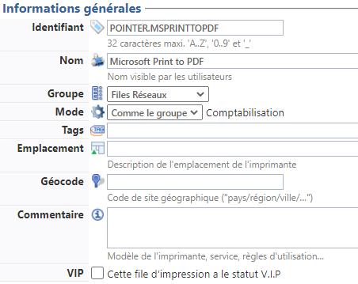
Complétez les zones suivantes :
-
Identifiant : par défaut, un identifiant est généré automatiquement par le système. Vous pouvez le modifier pour attribuer votre propre identifiant à la file. Votre identifiant peut contenir jusqu'à 64 caractères alphabétiques et chiffres, ainsi que le tiret bas (_) en guise de séparateur.
-
Nom : attribuez un nom à votre file d'impression. Ce nom s'affichant dans l'interface de déblocage ou dans les mails de notification, il doit contenir des informations précisant son modèle et sa localisation.
-
Groupe : associez le périphérique à un groupe défini préalablement créé.
-
Mode : le mode désigne la manière dont Watchdoc fonctionne pour libérer les travaux d'impression qu'il contrôle :
-
Comme le groupe : ce paramètre suppose que la file hérite de la configuration appliquée au groupe. Configurer toutes les files comme le groupe garantit l'homogénéité du paramétrage,
-
Mode Validation : ce mode suppose que l'utilisateur valide, avant impression, les travaux qu'il a lancés. L'utilisateur dispose pour cela d'une interface de déblocage (WES, WXS
 Watchdoc eXternal Solution. Solution de connexion reposant sur l'exploitation d'un lecteur de badge (de marque Elatec®) connecté à un boîtier réseau appelé TCP Conv. Inséré dans la connexion LAN existante de l'appareil grâce à ses 2 ports LAN fonctionnant comme un commutateur de réseau, ce boîtier permet, après lecture du badge, de libérer automatiquement les impressions demandées par le propriétaire du badge. ou web) ou d'un terminal de type CopiCode-IP Terminal (commercialisé par Cartadis) connecté à un périphérique d'impression qui permet la saisie d'un code PUK ou la lecture d'un badge pour débloquer les impressions en attente. Ce terminal permet le suivi, la facturation et la ventilation par code analytique des copies. (ex NetPOD /DSP). Les utilisateurs doivent alors confirmer leurs documents manuellement avant que ceux-ci ne soient imprimés.Mode Comptabilisation : ce mode débloque automatiquement les travaux d'impression sans exiger la validation de l'utilisateur.
Watchdoc eXternal Solution. Solution de connexion reposant sur l'exploitation d'un lecteur de badge (de marque Elatec®) connecté à un boîtier réseau appelé TCP Conv. Inséré dans la connexion LAN existante de l'appareil grâce à ses 2 ports LAN fonctionnant comme un commutateur de réseau, ce boîtier permet, après lecture du badge, de libérer automatiquement les impressions demandées par le propriétaire du badge. ou web) ou d'un terminal de type CopiCode-IP Terminal (commercialisé par Cartadis) connecté à un périphérique d'impression qui permet la saisie d'un code PUK ou la lecture d'un badge pour débloquer les impressions en attente. Ce terminal permet le suivi, la facturation et la ventilation par code analytique des copies. (ex NetPOD /DSP). Les utilisateurs doivent alors confirmer leurs documents manuellement avant que ceux-ci ne soient imprimés.Mode Comptabilisation : ce mode débloque automatiquement les travaux d'impression sans exiger la validation de l'utilisateur. -
Virtuelle : cochez cette cas si la file que vous configurez est virtuelle.
La file virtuelle est une file qui n'est associée à aucun périphérique mais qui est chargée de conserver les travaux d'impression en vue de les diriger vers le périphérique réseau qui sera sollicité par l'utilisateur pour l'impression "à la demande" Fonction qui permet à l'utilisateur de lancer ses travaux d'impression depuis son environnement de travail puis de débloquer ses impressions sur le périphérique de son choix. La validation de ses impressions peut être effectuée soit depuis l'interface web de Watchdoc, soit depuis le WES, après authentification par l'utilisateur..
-
Tags : saisissez au besoin des mots-clés internes permettant de qualifier la file. Utilisez l'espace en guise de séparateur entre deux mots-clés et le tiret bas (_) en guise de séparateur dans le mot-clé s'il est composé de plusieurs mots. Ces mots-clés servent principalement à la conception de filtres et sont exploités pour affiner les rapports personnalisés, facilitant ainsi l'exploitation des files.
-
Emplacement : indiquez l'emplacement précis du périphérique associé à la file. Cette information facilite l'exploitation de la file.
-
Géocode : indiquez le géocode du périphérique associé à la file en respectant l'ordre et la syntaxe suivant : Pays/région/ville. Cette information facilite l'exploitation de la file en la localisant précisément sur une liste arborescente propre à Watchdoc® et visible dans l'affichage par sites.
-
Commentaire : saisissez dans ce champ toute information complémentaire qui peut s'avérer utile pour l'exploitation de la file d'impression.
-
VIP : cochez cette case pour attribuer un statut spécifique à la file d'impression paramétrée. La file est alors caractérisée par une icone spécifique et ce critère constitue un filtre de sélection.
Section Périphériques
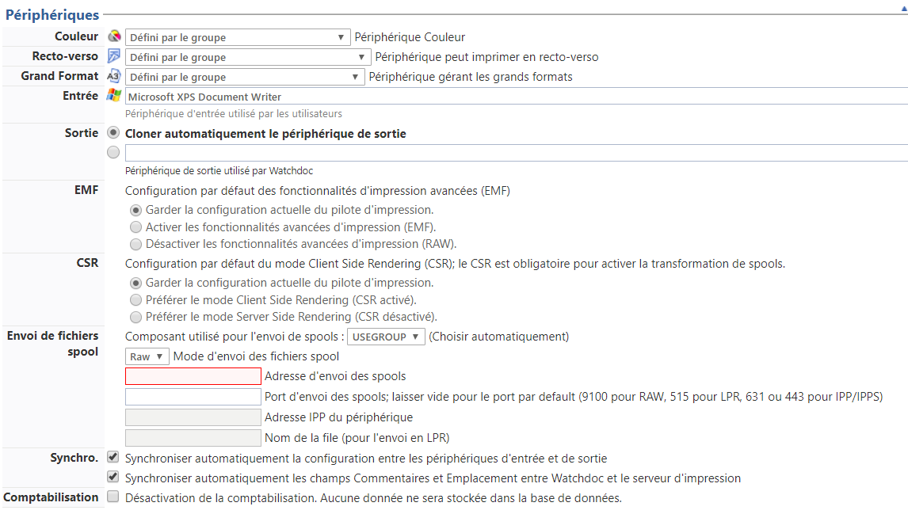
Dans cette section, indiquez les caractéristiques réelles du périphérique associées à la file :
-
Couleur : sélectionnez dans la liste le mode couleur d'impression autorisé par le périphérique :
-
Défini par le groupe : optez pour ce choix si le paramètre couleur (couleur, N&B ou déterminé par le pilote) soit celui qui a été appliqué au Groupe de files. La file hérite donc de la configuration générique.
-
Déterminer à partir du pilote : optez pour ce choix si le paramètre couleur soit celui qui a été défini par le pilote lors de l'installation ;
-
Périphérique Noir&Blanc : optez pour ce choix si le périphérique ne supporte que l'impression Noir&Blanc ;
-
Périphérique Couleur : optez pour ce choix si le périphérique supporte l'impression couleur.
-
Recto-verso : sélectionnez dans les possibilités d'impression autorisées par la file :
-
Défini par le groupe : optez pour ce choix si le mode d'impression (recto seul (simplex) ou recto-verso (duplex), ) est celui qui a été appliqué au Groupe de files. La file hérite donc de la configuration générique.
-
Déterminer à partir du pilote : optez pour ce choix si le mode d'impression à appliquer a été défini par le pilote lors de l'impression ;
-
Périphérique n'imprime que d'un côté : optez pour ce choix si le périphérique ne gère que l'impression recto ;
-
Périphérique peut imprimer en recto-verso : optez pour ce choix si le périphérique supporte l'impression recto-verso.
-
Grand Format : sélectionnez dans la liste les formats supportés par le périphérique :
-
Défini par le groupe : optez pour ce choix si le format à appliquer est celui qui a été défini pour le Groupe de files. La file hérite donc de la configuration générique de son Groupe.
-
Déterminer à partir du pilote : optez pour ce choix si le format à appliquer a été défini par le pilote lors de l'installation ;
-
Périphérique ne gérant que les petits formats : optez pour ce choix si le périphérique gère l'impression sur des formats inférieurs ou égaux à l'A4 x 1, 4 ;
-
Périphérique gérant les grands formats : optez pour ce choix si le périphérique permet l'impression sur les formats supérieurs au format A4x 1,4.
-
Entrée : par défaut, le nom de la file partagée est indiquée dans le champ de saisie. Dans la majorité des cas, ce paramètre ne donne lieu à aucun changement.
-
Sortie : par défaut, le nom de la file shadow est indiquée dans le champ de saisie. Dans la majorité des cas, ce paramètre ne donne lieu à aucun changement.
-
-
Garder la configuration actuelle du pilote d'impression : optez pour ce choix afin de conserver la configuration définie par le pilote lors de l'installation ;
-
Activer les fonctionnalités avancées d'impression (EMF) : optez pour ce choix afin d'appliquer le format EMF aux travaux d'impression.
Par défaut, les fonctionnalités avancées d'impression (EMF) sont activées, sauf pour les files d'impression universelles Xerox.
Dans la majorité des cas, l'activation ou désactivation de ce paramètre ne donne lieu à aucun changement. -
Désactiver les fonctionnalités avancées d'impression (RAW
"Raw" signifie "brut" en anglais. En impression, il désigne un format de fichier pour les images numériques. Il ne s'agit pas d'un format standard, mais d'un type de fichier créé par des dispositifs tels que les appareils photo numériques ou les scanners et caractérisé par le fait de n'avoir subi que peu de traitement informatique, proche, donc du format natif.) : optez pour ce choix afin d'appliquer le format RAW aux travaux d'impression.
-
-
CSR
Client Side Rendering. Dans une infrastructure Client/serveur, le Client-side rendering est la prise en charge du spool par le poste client et non par le serveur. Le poste client envoie donc au serveur un fichier de spool finalisé. : -
Garder la configuration actuelle du pilote d'impression : optez pour ce choix afin de conserver la configuration définie par le pilote lors de l'installation ;
-
Préférer le mode Client Side Rendering (CSR activé) : optez pour ce choix afin d'appliquer le format DSRaux travaux d'impression ;
-
Préférer le mode Server Side Rendering (CSR désactivé): optez pour ce choix afin d'appliquer le mode SSR..
-
-
Synchronisation.
La synchronisation entre le spooler de la file partagée et la file shadow File créée par Watchdoc lors de la configuration d'une file partagée. Cette file shadow reçoit le spool d'impression contrôlé par Watchdoc et a pour fonction de l'envoyer vers le périphérique d'impression après analyse. dépend fortement de la capacité des constructeurs à répliquer cette information. Dans la mesure où l'opération de synchronisation n'est pas fiable pour tous les matériels, nous vous conseillons de vérifier les informations qui sont répliquées sur la file shadow.-
Synchroniser automatiquement la configuration entre les périphériques d'entrée et de sortie : cette case concerne la synchronisation entre le spooler de lal file partagée et le spooler de la file shadow.
-
Synchroniser automatiquement les champs Commentaires et Emplacement entre Watchdoc et le serveur d'impression : cochez cette case pour permettre à Watchdoc de récupérer automatiquement les informations saisies lors de l'installation de la file d'impression.
-
-
-
Désactivation de la comptabilisation : la case est décochée car Watchdoc fonctionne en mode comptabilisation par défaut.
Décochez la case pour désactiver ce mode. Dans ce cas, les données relatives aux travaux d'impression ne sont plus enregistrées dans la base de données à des fins statistiques.
Désactiver la comptabilisation est principalement utilisé lors de tests d'impression, afin de ne pas fausser les statistiques d'usage.
-
Section Envoi de fichiers spools
Par défaut, l'envoi des spools est géré automatiquement par Watchdoc. Cependant, il peut être nécessaire, dans des configurations très spécifiques, de modifier les paramètres suivants :
-
Mode d'envoi des fichiers spools : dans la liste, sélectionnez la manière dont Watchdoc envoie les spools aux périphériques d'impression :
-
Utiliser la valeur du groupe : permet d'utiliser le même mode d'envoi que celui défini pour le groupe de files auquel appartient la file ;
-
Choisir automatiquement :permet de laisser Watchdoc choisir automatiquement le mode d'envoi des spools ;
-
Forcer l'utilisation du spooler Doxense : force l'envoi des spools à l'aide du spoller Doxense (Watchdoc) à la place du spooler MS Windows ;
-
-
Synchronisation du statut : dans la liste, sélectionnez la manière de synchroniser le statut du périphérique d'impression :
-
utiliser la valeur du groupe : permet d'utiliser le même mode de synchonisation que celui qui est défini pour le groupe auquel appartient la file ;
-
synchroniser le statut : permet de synchroniser le statut du périphérique d'impression avec Watchdoc : ce dernier tient alors compte du statut du périphérique envoyé en SNMP pour traiter les demandes d'impression (mode recommandé) ;
-
ne pas synchroniser le statut : permet de ne pas synchroniser le statut du périphérique d'impression avec Watchdoc. Ce paramètres peut être utile dans le cas où les fluctuations de statuts perturbent le fonctionnement de Watchdoc.
-
-
Ralentir l'envoi des spools : indiquez si vous souhaitez agir sur la vitesse d'envoi des spools (paramètre uniquement affiché en mode "debug")
-
Utiliser la valeur du groupe : optez pour cette valeur afin d'appliquer la configuration du gropue auquel appartient la file ;
-
Ralentir l'envoi du spool : s'il est nécessaire de ralentir l'envoi des spools, indiquez ci-après les paramètres à appliquer :
-
Délai entre les travaux : indiquez, en millisecondes, le délai à respecter entre 2 envois de travaux.
-
Durée de l'envoi : indiquez, en millisecondes, la durée de l'envoi.
-
Taille des tampons : indiquez, en KO, la taille de la mémoire tampon du périphérique (256 Ko par défaut).
-
-
Ne pas ralentir l'envoi de spool : cochez cette case pour conserver la vitesse normale d'envoi de spools.
-
-
Adresse : l'adresse du serveur utilisé pour envoyer les fichiers spools est automatiquement affichée dans le champ.
-
Timeouts :
-
Connexion : indiquez, en secondes, le délai autorisé pour que Watchdoc établisse la connexion au périphérique. Au-delà de ce délai, le travail d'impression est annulé.
-
Envoi : indiquez, en secondes, le délai autorisé pour envoyer un spool (tampon de 256KB).
-
-
Protocole par défaut : sélectionnez dans la liste le protocole à utiliser par défaut et définissez les paramètres de ce protocole :
-
Paramètres RAW
"Raw" signifie "brut" en anglais. En impression, il désigne un format de fichier pour les images numériques. Il ne s'agit pas d'un format standard, mais d'un type de fichier créé par des dispositifs tels que les appareils photo numériques ou les scanners et caractérisé par le fait de n'avoir subi que peu de traitement informatique, proche, donc du format natif. : cochez la case si vous autorisez l'envoi en RAW et indiquez obligatoirement le port dédié ou laissez vide pour utiliser le port 9100 par défaut ; -
Paramètres IPPS
Version sécurisée du protocole IPP : cochez la case si vous autorisez l'envoi en IPPS et indiquez l'adresse IPPS du périphérique dans le champ Uri ; -
Paramètres IPP
Internet Printing Protocol (protocole d'impression Internet) ou IPP, définit un protocole standard pour l'impression et ce qui s'y rattache, comme les files d'attente d'impression, la taille des médias, la résolution, etc.
Comme tous les protocoles basés sur IP, IPP peut être utilisé localement ou sur l'Internet vers des imprimantes à des centaines ou des milliers de kilomètres. Toutefois, au contraire d'autres protocoles, IPP supporte les contrôles d'accès comme l'authentification et le chiffrement, le rendant ainsi plus sécurisé que d'autres solutions plus anciennes.
(Source : Wikipédia) : cochez la case si vous autorisez l'envoi en IPP (non-sécurisé) et indiquez l'adresse IPP du périphérique dans le champ Uri ; -
Paramètres LPR
Line Printer Remote ou LDP Line Printer Daemon ( imprimante distante en ligne ou protocole démon d'imprimante en ligne ) est un système de communication de client à serveur destiné à l'impression. La première mise en œuvre de ce protocole a été introduite avec le système d'impression Berkeley (Berkeley printing system) pour BSD. Le système d'impression Berkeley est communément utilisé sur les systèmes de type UNIX, bien que CUPS soit aujourd'hui plus répandu, notamment sur Linux.
(Source : Wikipedia) : cochez la case si vous autorisez l'envoi en LPR, indiquez le nom de la file le nom de la file correspondant au périphérique ainsi que le port d'accès.
-
-
Support du format PDF : précisez si le périphérique supporte le format PDF permet de le rendre compatible avec WPC for Chrome et for Android.
-
Détection automatique : permet au périphérique de gérer cette détection automatiquement ;
-
Version minimale : si le format PDF est supporté, indiquez quelle est la version minimale supportée ;
-
Version maximale : si le format PDF est supporté, indiquez quelle est la version maximale supportée.
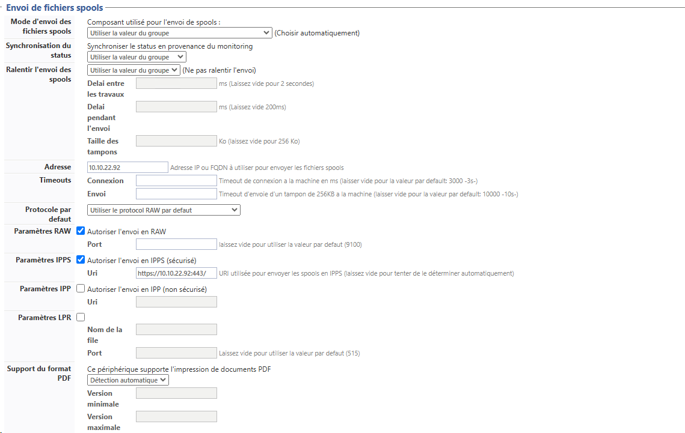
-
Section Restrictions
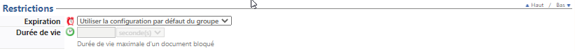
Le paramètre fonctionne avec le paramètre Durée de vie qui suit.
Il permet de définir le traitement qui doit être appliqué aux travaux d'impression au-delà de la durée de vie fixée par défaut :
-
Utiliser la configuration par défaut du groupe : le traitement appliqué au document au terme de la durée de vie est celui qui a été défini pour le Groupe de files (si la file appartient à un groupe). Dans ce cas, c'est la durée de vie définie pour le groupe qui s'applique à la file.
-
Supprimer automatiquement le document : le document est supprimé une fois que la durée de vie définie est expirée ;
-
Archiver automatiquement le document : le document est archivé au terme de la durée de vie définie. Archivé, le document n'est plus en attente d'impression, mais reste accessible dans l'interface web de l’utilisateur (qui peut alors relancer l'impression).
L'archivage est utile en cas de dysfonctionnement puisqu'il offre la possibilité d'analyser un document ayant posé problème.
Il peut également être utile d'archiver les demandes d'impressions issues d'applications métiers spécifiques pour lesquelles la génération d'impression est difficile.
Notez cependant que l'archivage nécessite un espace de stockage important sur le serveur qui héberge Watchdoc. -
Débloquer automatiquement le document : le document est imprimé au terme de la durée de vie définie, sans validation de l'utilisateur. Ce paramètre n'est utilisé qu'en mode Validation
Mode de fonctionnement de Watchdoc permettant de débloquer les travaux d'impression après validation par l'utilisateur depuis une interface dédiée (terminal connecté au périphérique ou site web)..
N.B. : en cas de déblocage automatique, la confidentialité des impressions n'est pas garantie, l'utilisateur n'étant pas forcément à proximité du périphérique sur lequel est imprimé le document.
-
Renouveler le délai d'expiration : optez pour ce choix afin de renouveler le délai d'expiration une fois que la durée de vie définie est expirée.
-
Durée de vie (durée de rétention) : indiquez en secondes, minutes, heures et jours, le temps durant lequel un travail reste dans la file tant qu'il n'est pas débloqué par l'utilisateru.
Au-delà de la durée de vie précisée, le traitement défini précédemment est appliqué.
N.B. : si la file appartient à un groupe, c'est la durée définie dans le groupe qui est appliquée. Ceci afin d'éviter des erreurs liées à la coexistence de deux durées de vie différentes pour une même file.
Section Plateforme
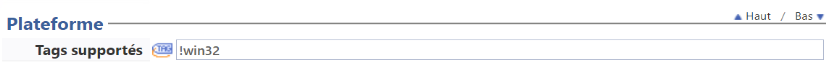
Cette section permet de préciser que la file ne doit pas être utilisée par Watchdoc Print Client sur une plateforme spécifique.
Dans le champ Tags supportés, saisissez :
-
!WIN32 : précise que la file ne doit pas être utilisée par WPC for Windows.
Section Contacts
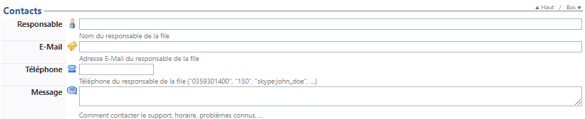
Les informations saisies dans cette section sont affichées dans l'interface d'administration et l'interface web d'utilisation de l'outil. Elles permettent d'orienter l'utilisateur vers le référent Watchdoc® en mesure de les dépanner en cas de problème ou de question sur le périphérique contrôlé par Watchdoc® :
-
Responsable : saisissez son nom (et prénom pour plus de précision) ;
-
E-mail : saisissez son adresse mail ;
-
Téléphone : saisissez son numéro de téléphone (sous forme de chiffres) ;
-
Message : fournissez toute information complémentaire pouvant aider l'utilisateur qui souhaite établir un contact avec le responsable (horaires de disponibilité, jours de fermeture, information sur la localisation physique du bureau du responsable, procédure spécifique à suivre, etc.).
Section Redirections
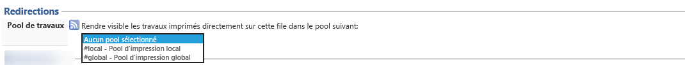
En cas d'indisponibilité d'une file physique (périphérique d'impression), les travaux ne peuvent être imprimés. Dans ce cas, pour éviter aux utilisateurs d'avoir à attendre la remise en état du périphérique, Watchdoc offre une fonction de redirection permettant de solliciter d'autres périphériques du parc qui prennent alors le relais.
La redirection des travaux d'une file vers une autre file n'est possible qu'entre files compatibles.
Pour permettre la redirection d'une file vers l'autre, il convient donc d'avoir indiqué préalablement à Watchdoc les compatibilités entre files (notamment en matière de pilotes lorsque les périphériques d'impression sont de marques différentes).
Dans les versions antérieures à Watchdoc 5.2, des files "cibles" étaient associées aux files physiques pour être sollicitées en cas d'indisponibilité de cette file physique.
La version 5.2 introduit le concept de "Pool" sur lequel repose la redirection : les files virtuelles sont associées à un pool appelé Job ticket pool. De même, les files physiques sont associées à un pool qui constitue alors une source de travaux que ces files sont susceptibles d'imprimer. Ainsi, lorsqu'un périphérique est indisponible, tous les autres périphériques associés au même pool peuvent être sollicités.
Watchdoc V5.2 est doté de deux pools par défaut pouvant répondre à la plupart des cas d'usage :
-
#global
-
#local
Outre ces pools par défaut, vous pouvez créer autant de pools que nécessaire.
Redirection
Rendre visible les travaux imprimés dans le pool suivant : dans la liste, sélectionnez l'un des pools existants pour permettre à Watchdoc d'envoyer les travaux d'impression vers d'autres files en cas d'indisponibilité de la file que vous configurez.
Sources : par défaut, les files héritent de la configuration du groupe de files auquel elles appartiennent.
Ne pas utiliser : cochez la case pour appliquer à la file que vous paramétrez la configuration d'une ou plusieurs sources de redirection spécifiques.
Source(s) : dans le cas où vous avez coché la case précédente, indiquez dans ce champ la ou les files sources susceptibles d'envoyer leurs travaux sur la file configurée ;
-
Si Watchdoc est utilisé en mode Comptabilisation
Mode de fonctionnement de Watchdoc permettant de débloquer automatiquement les travaux d'impression. Ce mode permet de comptabiliser les impressions à des fins statistiques sans demander la validation à l'utilisateur. Eventuellement, ce mode peut être associé à des quotas fixant le nombre d'impressions accordées à un utilisateur. simple, la redirection ne peut reposer sur les pools, puisque l'utilisateur ne débloque pas ses impressions depuis un périphérique qu'il aurait choisi. Il convient cependant d'indiquer le ou lespériphériphériques vers lesquels les travaux peuvent être redirigés en cas d'indisponibilité du périphérique habituel : -
Périphérique de secours - Forcer la redirection : cochez cette case pour diriger obligatoirement les travaux d'impression vers un autre périphérique quand, ponctuellement, le périphérique ne doit plus être utilisé, mais ne peut être mis hors-service. C'est le cas, notamment, lors d'une intervention de maintenance lorsque le technicien doit mener des tests sur la machine et risque donc d'en fausser les statistiques d'utilisation.
-
Périphérique de secours - Redirection automatique : cochez cette case pour diriger automatiquement les travaux d'impression vers un autre périphérique quand, aléatoirement, la file que vous paramétrez est indisponible. Dans ce cas, sélectionnez dans la liste déroulante la ou les files de secours :
-
Pool de travaux : sélectionnez dans la liste le pool dans lequel sont regroupées les autres files compatibles avec la file d'impression que vous paramétrez. Par défaut, lorsque la redirection 'est pas activée, c'est la mention Aucun pool sélectionné qui apparaît. Dans cette liste figurent les deux pools par défaut (#local ; #global) ainsi que les pools que vous avez éventuellement créés ;
Section Monitoring
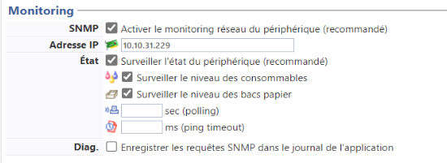
-
SNMP
Protocole SNMP : Simple Network Management Protocol (en français, "Protocole Simple de Gestion de Réseau") est un protocole de communication qui permet aux administrateurs réseau de gérer les équipements du réseau, de superviser et de diagnostiquer des problèmes réseaux et matériels à distance. : Activer le monitoring réseau du périphérique (recommandé). Cochez la case pour permettre à Watchdoc de surveiller le périphérique réseau via le protocole SNMP, afin de déterminer son état en temps réel ainsi que le niveau des consommables.
Il est fortement conseillé d'activer cette option pour tout périphérique d'impression réseau. Pour que le monitoring puisse fonctionner, il convient d'activer également le SNMP sur le périphérique.
-
Adresse IP : si vous activez le monitoring SNMP, indiquez l'adresse IP du périphérique réseau surveillé. Seuls des paquets SNMP (UDP 161) et HTTP (TCP 80) sont envoyés.
-
Etat : si vous activez la surveillance SNMP, cochez cette case pour surveiller l'état du périphérique et précisez quels sont ses éléments à surveiller :
-
Niveau des consommables : cochez la case pour surveiller le niveau d'encre ;
-
Niveau des bacs papier : cochez la case pour surveiller la charge de papier dans les bacs ;
-
-
sec (polling) : indiquez, en secondes, la période selon laquelle le sondage doit être effectué.
-
ms (ping timeout) : ce paramètre indique le temps, en millisecondes, au-dela duquel Watchdoc considère le périphérique comme hors-service et lance donc une alerte.
-
Diag. : cochez la case suivante si vous souhaitez que les requêtes soient enregistrées dans le journal de Watchdoc. Stockées dans la base SQL Counters et Incidents, ces enregistrements sont utilisés afin d'établir un diagnostique en cas de panne.
Section Configuration SNMP
Si vous avez activé le monitoring SNMP, complétez-en la configuration (disponible depuis la v6.1.4898) :
-
Source : cochez la case si la file appartient à un groupe de files et que la configuration du groupe doit s'appliquer à la file.
Dans ce cas, il n'est pas nécessaire de configurer le SNMP.
-
Version de SNMP : sélectionnez la version du protocole SNMP utilisée.
-
Pour la v2, indiquez :
-
Communauté :indiquez l'identifiant correspondant à la Communauté de lecture et celui de la Communauté d'écriture du protocole SNMP activé sur les périphériques.
Par défaut, la valeur de communauté est public ou private.Pour des raisons de sécurité, nous vous recommandons de changer ces valeurs.
-
-
Pour la v3, saisissez toutes les valeurs permettant de garantir la sécurité des échanges entre le périphérique et Watchdoc.
Ces valeurs doivent correspondre à celles qui ont permis de configurer SNMP v3 sur le périphérique.-
Nom d'utilisateur : saisissez le nom d'utilisateur configuré sur le périphérique ;
-
Contexte : saisissez le contexte SNMP configuré sur le périphérique ;
-
Authentification : sélectionnez l'algorithme utilisé (MD5 or SHA), puis saisissez le mot de passe d'authentification ;
-
Confidentialité : sélectionnez l'algorithme utilisé, puis saisissez le mot de passe d'authentification . Pour les tâches d'administration de serveurs sensibles via SNMP (reboot, etc.), il est recommandé d'utiliser AES.
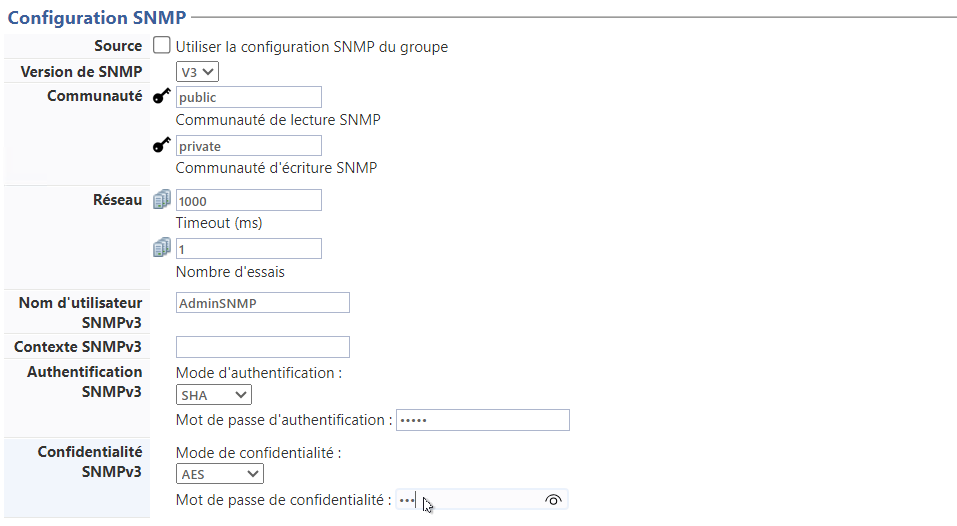
-
-
Section Notifications
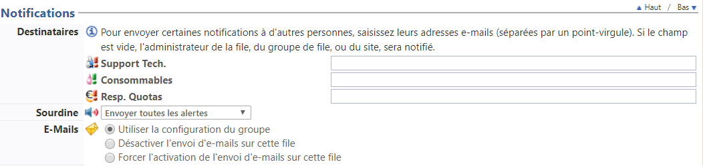
-
Destinataires : saisissez les adresses courriel de référents habilités à intervenir en cas de problèmes techniques détectés par le système, tels que l'arrêt d'un périphérique ou une alerte en cas de détection d'un niveau bas de consommable, par exemple.
-
Support technique : saisissez dans ce champ l'adresse courriel de la personne chargée de gérer techniquement les périphériques et qui pourra donc intervenir en cas de panne ou de problème ;
-
Consommables : saisissez dans ce champ l'adresse courriel de la personne chargée de gérer les consommables des périphériques et qui pourra donc intervenir dès qu'il sera nécessaire de réapprovisionner les périphériques en cartouches d'encre ou en papier, par exemple ;
-
Resp. Quotas : saisissez dans ce champ l'adresse courriel de la personne chargée de gérer les quotas d'impression (ou Porte-Monnaie Virtuels (PMV)).
-
Sourdine : ce paramètre vous permet de gérer les alertes lancées depuis la file d'impression :
-
envoyer toutes les alertes : sélectionnez ce(par défaut) pour que toutes les alertes relatives à la file d'impression soient envoyées ;
-
n'envoyer que les alertes graves : sélectionnez ce paramètre pour limiter le nombre d'alertes envoyées aux seules alertes considérées comme graves (indisponibilités du périphérique) ;
-
n'envoyer aucune alerte : sélectionnez ce paramètre pour désactiver l'envoi des alertes depuis la file d'impression.
-
E-mails : ce paramètre vous permet de préciser les modalités de notifications par e-mail appliquées pour le périphérique configuré.
-
Utiliser la configuration du groupe : optez pour ce choix si le traitement à appliquer est celui qui a été défini pour le Groupe de files. La file hérite donc de la configuration générique de son Groupe.
-
Désactiver l'envoi d'e-mails sur cette file : optez pour ce choix si vous ne souhaitez pas utiliser la notification par mail ;
-
Forcer l'activation de l'envoi d'e-mails sur cette file : optez pour ce choix si vous souhaitez utiliser la notification par mail pour cette file alors qu'elle appartient à un groupe pour lequel cette option n'est pas activée.
-
Utiliser la configuration du groupe : optez pour ce choix si le traitement à appliquer est celui qui a été défini pour le Groupe de files. La file hérite donc de la configuration générique de son Groupe.
Section Archivage
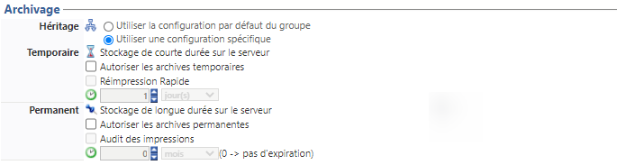
Ce paramètre permet de donner à l'utilisateur la possilibilité d'archiver les travaux d'impression depuisl'interface utilisateur.
-
Héritage
-
Utiliser la configuration par défaut du groupe : optez pour ce choix pour utiliser le mode d'archivage appliqué au Groupe de files. La file hérite donc de la configuration générique de son Groupe.
-
Utiliser une configuration spécifique : optez pour ce choix pour définir précisément les paramètres d'archivage. Dans ce cas, de nouveaux paramètres doivent être complétés.
-
-
Temporaire : ce paramètre permet de définir les modalités de l'archivage temporaire des travaux d'impression sur le serveur.
-
autoriser les archives temporaires :
-
réimpression rapide :
-
-
Permanent : ce paramètre permet de définir les modalités d'archivage permanent des travaux d'impression sur le serveur.
-
autoriser les archives permanentes : cochez cette case pour activer l'archivage illimité des impressions sur le serveur. De la sorte, l'utilisateur peut réimprimer ou gérer et supprimer ses archives à volonté.
-
audit des impressions : cochez cette case pour activer l'archivage sur le disque, sans possibilité aux utilisateurs de les supprimer.
-
Section WES
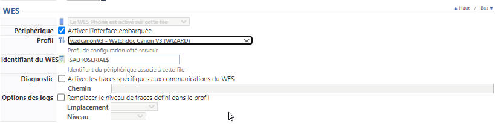
WES (Watchdoc Embedded Solution) désigne l'interface Watchdoc embarquée sur les périphériques d'impression, interface qui permet aux utilisateurs de disposer des fonctionnalités de Watchdoc directement sur le périphérique en plus de l'interface accessible via un navigateur web.
Les WES, développés par Doxense®, sont spécifiques à chaque marque et modèle de périphérique des constructeurs avec lesquels Doxense® a établi des partenariats technologiques.
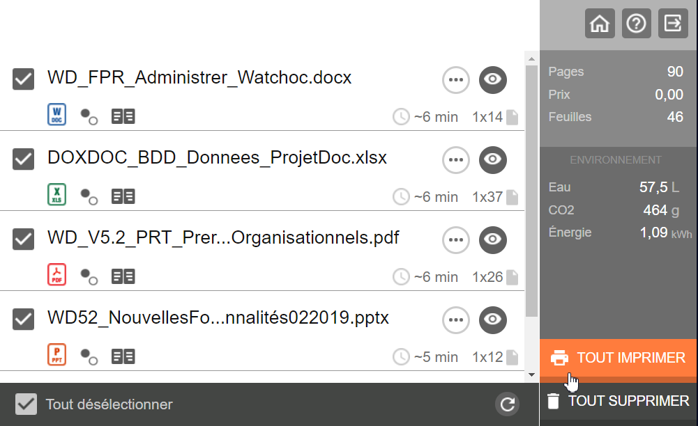
Exemple d'interface Watchdoc V3 affichée sur un périphérique d'impression
-
Périphérique : activer l'interface embarquée : cochez la case pour mettre en œuvre le WES ;
-
Profil : dans la liste déroulante, sélectionnez le WES adapté à votre périphérique ;
-
Identifiant: saisissez le numéro de série du périphérique d'impression associé à la file. Cet identifiant doit être unique (et Watchdoc refusera la validation du paramétrage si l'identifiant n'est pas unique). Si la valeur $AUTOSERIAL$ apparaît par défaut dans le champ, il convient de conserver cette valeur qui permet au serveur d'indiquer automatiquement à Watchdoc l'identifiant du périphérique.
-
Diagnostic :
-
Activer les traces : ce paramètre vous permet d'activer des fichiers traces (logs) dans lesquels sont listés tous les échanges effectués entre le périphérique et Watchdoc via le WES. Ce type de fichier est analysé en cas de problème de fonctionnement du WES. Vous pouvez alors préciser quel est le niveau de traces souhaité.
-
Niveau de traces : sélectionnez dans la liste les requêtes que vous souhaitez voir reportées dans votre fichier trace.
-
Emplacement des fichiers : dans cette zone, saisissez le chemin vers un dossier (sur le serveur d'impression) dans lequel les fichiers de traces sont enregistrés. Si vous n'indiquez aucun chemin, les fichiers seront enregitrées par défaut dans le dossier Watchdoc>Logs du serveur d'impression.
-
Section Transformation de spools
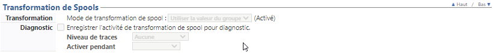
Ce paramètre permet à Watchdoc d'analyser les spools d'impression pour offrir à l'utilisateur la possibilité de modifier ses choix d'impression initiaux afin d'adopter un comportement plus écologique et plus économique.
-
Mode de transformation de spool: indiquez, grâce aux paramètres, is le mode est activé ou non sur la file:
-
Utiliser la valeur du groupe : par défaut, si la file appartient à un gropue de files, c'est le paramètre choisi pour le groupe de files qui est appliqué sur la file ;
-
Activaté : choisissez ce paramètre pour activer la transformation de spool sur la file ;
-
Désactivé : choisissez ce paramètre pou désactiver la transformation de spools sur cette file.
Section Profil du périphérique
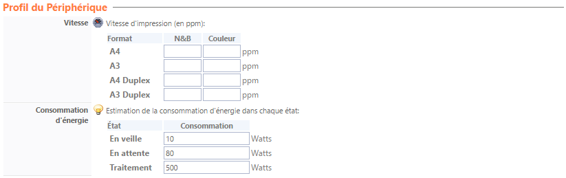
La vitesse d'impression du périphérique et sa consommation d'énergie sont des informations délivrées à l'utilisateur via le WES, à titre informatif. Elles s'affichent également dans l'onglet Etat de la file de l'interface d'administration de Watchdoc.
Avant de configurer le profil du périphérique, vérifiez que vous possédez les informations requises. Ces informations sont généralement fournies par les constructeurs dans les notices descriptives des périphériques.
-
Vitesse : indiquez, en page par minute (ppm), le nombre de pages A4 ou A3 en simplex ou en duplex imprimées en N&B ou en couleur.
-
Consommation d'énergie : indiquez, pour les différents états du périphérique, quelle est la consommation estimée en Watts.
Section Mode expert
La section regroupe des paramètres permettant de faciliter la détection d'anomalies afin de faciliter l'analyse.
-
Sans Echec : en mode sans échec, Watchdoc essaye de détecter de manière différente les documents non compatibles. Cette solution n'est malheureusement pas fiable à 100% et peut entraîner des erreurs de comptage dans certaines situations.
-
Couleur : dans certains cas, Watchdoc est capable d'identifier si un document "couleur automatique" ne contient que du texte noir ou gris. Attention : toutes les images sont considérées comme étant en couleur. Certains pilotes reportent incorrectement les informations de couleur, ce qui peut provoquer des erreurs de détection.
-
Titre :
-
Ignorer le titre : certains pilotes renvoient un titre de document incorrect. Cochez cette case pour ignorer le titre envoyé par le pilote.
-
Remplacer le titre des documents : par souci de confidentialité, il peut être nécessaire de remplacer le titre des documents.
-
Chiffrer le titre des documents dans la file d’attente partagée :nativement gérée par MS Windows la fonction disparaît de l'interface d'administration Watchdoc après la version 6.1.0.5178.
-
-
Copies : certains pilotes renvoient un nombre de copies incorrect (nombre de copies au carré). Cochez cette case pour ignorer l'information envoyée par le pilote.
-
Recto-verso : certains pilotes renvoient un mode recto-verso incorrect. Cochez cette case pour ignorer l'information envoyée par le pilote.
-
N-to-Up : certains pilotes renvoient un mode N-to-Up (2 pages en 1, 4 pages en 1, ..) incorrect. Cochez cette case pour l'ignorer.
Identité : certains pilotes renvoient une identité utilisateur incorrecte. Cochez cette case pour l'ignorer.
-
Station : dans certains cas, il est utile d'utiliser le nom du poste de travail comme nom d'utilisateur. Cochez cette case pour activer ce mode.
-
Fantôme : dans certains cas, il est utile de supprimer la dernière page d'une demande d'impression si elle est vide.
-
Domaine : dans certains cas, il est utile de forcer le domaine utilisateur vers un annuaire particulier, voir un annuaire proxy.
-
Auth. Titre : dans certaines situations, l'identité de l'utilisateur doit être extraite du titre du document. Il faut préciser une expression régulière (Regular Expression) capturant la portion du titre correspondant au login utilisateur. Ex: "^GenericApp - User:([A-Za-z0-9_]+)$"
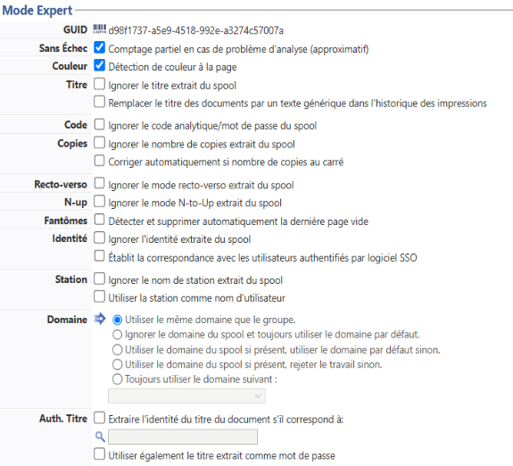
Validation de la configuration
Cliquez sur le bouton  pour Valider la configuration
pour Valider la configuration